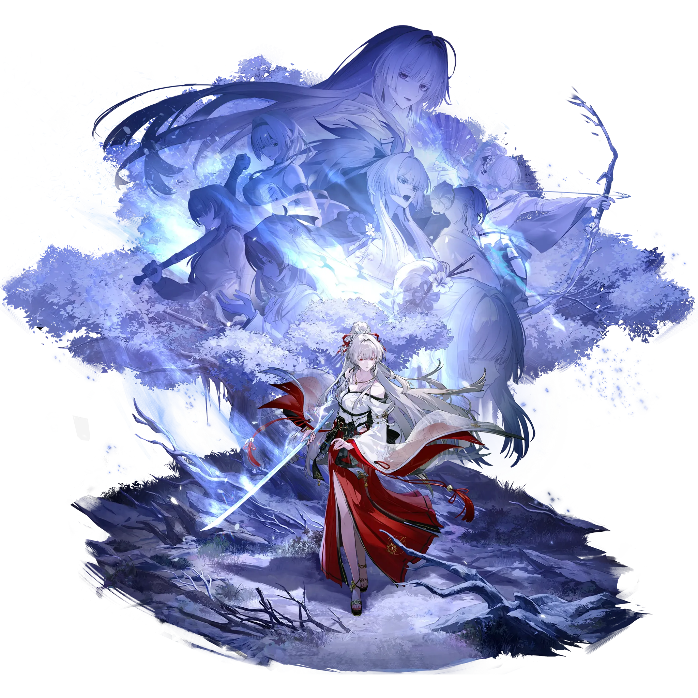

Hiyuki
Tier 0
Glacio
Best Hiyuki build guide for Wuthering Waves. See Hiyuki's best weapons, Echoes, teams, rotations, sequences, skill priority, and how to play Hiyuki.
🔍 Detail Skill
Semua skill aktif dan pasif beserta efeknya.
Data skill belum tersedia.
⚔ Weapon Terbaik
Diurutkan dari yang paling kuat. Persentase menunjukkan performa relatif terhadap pilihan terbaik.
1
Frostburn
100.00%
2
Blazing Brilliance
83.00%
3
Emerald of Genesis
82.30%
4
Emerald Sentence
81.20%
5
Red Spring
81.10%
6
Everbright Polestar
79.80%
💎 Echo Set Terbaik
Set terbaik untuk karakter ini, diurutkan berdasarkan prioritas.
1
Wishes of Quiet Snowfall
100.00%
📊 Stat Utama
Stat yang dicari pada tiap slot.
4 cost
CRIT Rate / CRIT DMG
3 cost
Glacio DMG
3 cost
Glacio DMG ≥ ATK%
1 cost
ATK%
1 cost
ATK%
👥 Tim yang Direkomendasikan
Karakter yang sering dipasangkan bersama Hiyuki.
Hiyuki
 Lucilla
Lucilla
Lynae
 Suisui
Suisui
Chisa
 Mornye
Mornye
🔗 Lanjutkan
Build ini dirangkum dari Prydwen Institute. Starwise tidak menghitung sendiri. Angka bisa berubah setelah patch atau karakter baru rilis.